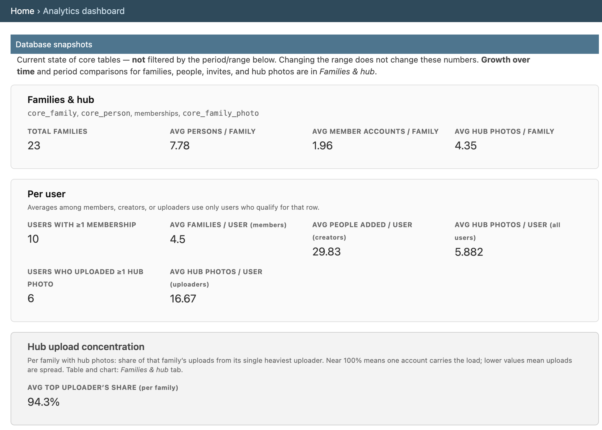
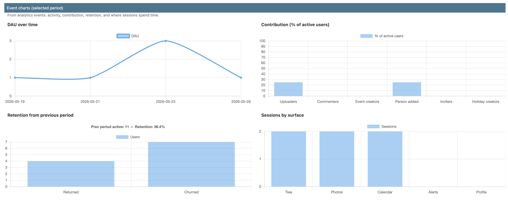

Portfolio · Technical deep dive
Building Fam
A two-platform consumer app — Django on the backend, Expo / React Native on mobile — shipped by a one-person team running an AI-augmented engineering workflow. The workflow that produced it is checked into the repo, so it's repeatable and transferable, not a one-off. Here's what's inside the repo and why it's structured the way it is.
Tech stack
One contract — an OpenAPI 3.0 spec generated by drf-spectacular on the backend — drives a TypeScript client on mobile via openapi-typescript. Drift is a CI failure, not a runtime surprise.
Mobile
Backend
Cloud & Infra
Shared contract
Testing & release
The hard part: a family graph + a materialized "what's happening" feed
A family isn't a feed. It's a graph of people, relationships, and events that recur. The hard engineering problem is taking that graph and producing one denormalized stream per viewer — birthdays, anniversaries, custom holidays, events, and new photos — with the right privacy scope applied on the way out.
The domain is split into 15 service modules under
backend/core/services/ (111 files) — one
per bounded context (occurrences/,
photos/, faces/, events/,
pulse/, activity/,
notifications/, transfer_requests/,
unified_moments/…). Views stay thin; logic stays in
services; the relationship-graph rules live in one place and are
tested with their own IDOR suite at
backend/tests/test_security_idor.py.
The occurrence materialization endpoint
(GET /api/v1/families/{id}/occurrences) is the
centerpiece: every birthday, anniversary, holiday rule, and event
gets reconciled into one paginated stream by a Celery task, scoped
to the viewer's membership, and cached. That stream is what powers
the Pulse feed in the app.
Media pipeline: signed CDN URLs + async face tagging
Photos are private by default. The pipeline:
- Uploads go to S3 via Django Storages. Originals are never served directly.
-
CloudFront signed URLs generate access tokens
with two modes: per-URL query signing (fine-grained, single object)
or stable cookie-based wildcard policy (mobile-friendly, fewer
re-signs). Code lives in
backend/core/infra/cloudfront_signed_urls.py. Falls back to S3 presigned URLs when the CDN is disabled. -
Face intelligence runs async on Celery: detection
via AWS Rekognition, suggestions surfaced through
PhotoTagSuggestion, runs tracked byPhotoFacePipelineRun. Toggleable per family. -
Audience scoping (
PhotoAudience,AudienceGroup) gates who can see what, enforced at the serializer layer.
The automation pipeline
Every change runs through this gauntlet before it can land:
-
Filename casing check
scripts/verify-filename-casing.sh— cross-platform safety so a macOS-only commit doesn't blow up on a case-sensitive Linux CI runner. -
Backend verification
scripts/verify-backend.sh— Ruff lint & format,pytestacross 120 canonical tests,pip-auditfor vulnerable deps, migration sanity. -
40 bash smoke suites
scripts/smoke/run_all.sh— one script per subsystem (01_auth.sh,02_families.sh,03_persons.sh…16_claim_invites_email.sh) driving the live Django server end-to-end. -
Mobile verification
scripts/verify-mobile.sh— ESLint, Prettier, TypeScript, the OpenAPI contract check (mobile client vs. backend schema), and Jest across 160+ test files. -
Maestro E2E on a real simulator
42 YAML flows in
mobile/maestro/running on an iPhone 16 simulator on a macOS runner — login, family gates, tree navigation, photo upload, transfer control, RSVP, claim invites, the lot. Gated tomainpushes to conserve CI minutes. -
Manual deploy dispatch
.github/workflows/deploy.yml— manual workflow_dispatch withtarget(backend / mobile / both) andmobile_runner(EAS / GitHub-hosted / self-hosted Mac) inputs. Backend hits a deploy webhook; mobile builds via EAS or a self-hosted Mac with the full codesigning chain.
Agent-assisted workflow
Fam is built with a multi-role AI workflow encoded in the repo. The point isn't "I used an AI" — it's that the roles, reading order, and guardrails are checked into source and enforced by slash commands, not tribal knowledge.
Nine role prompts live under
docs/engineering/prompts/, each with a
matching slash command in .claude/commands/:
/product— product / founder review/architect— engineering plan review/designer— pre-implementation UI review/brief— PR-by-PR implementation brief/developer— implementation (code + tests)/qa— UX / trust pass, report-only/design-audit— live UI audit, ship-grade pass/release— documentation sync after merge/debug— failing test / runtime bugfix
AGENTS.md at the repo root is the router:
it tells each role what to read first, sequences the workflow
(product → architect → designer → brief → developer → QA →
design-audit → release), and enforces a cost-impact
gate — any work that would incur paid-service usage must
stop and ask. Multi-phase initiatives get their own folder under
docs/agent_handoffs/ with a dedicated
AGENT_INSTRUCTIONS.md; finished ones graduate to
docs/archive/agent_handoffs/ with their
final state.
Every shipped change is documented as one Markdown file in
docs/archive/pull_requests/, and the
commit title is required to exactly match the archive filename.
git log becomes a readable product changelog.
Testing approach
Belt and suspenders. Four layers, all gated in CI:
-
Backend unit + integration: 120 canonical tests in
backend/tests/(plus colocated suites across the repo), running onpytest+pytest-djangoagainst PostgreSQL (configurable to SQLite for fast local runs). -
Security: a dedicated
test_security_idor.pysuite — every family/person/photo endpoint gets exercised by an outsider account to make sure the relationship-graph rules hold under adversarial access patterns. -
Mobile unit: 160+ Jest test files via the
jest-expopreset, with extensive Expo SDK mocks (file system, image picker, image manipulator, vector icons). 15-second timeout for CI safety margin. - End-to-end on a real iOS simulator: 42 Maestro YAML flows covering the entire user journey — onboarding, tree navigation, photo tagging, RSVPs, transfer control, claim invites. Not mocked — driven through the actual Expo build.
- Contract: the mobile OpenAPI-typed client is checked against the backend schema on every CI run. Drift is a failed build.
-
Live-server smoke: 40 bash suites under
scripts/smoke/exercising real HTTP against a running Django server, covering every major subsystem.
Analytics & observability
Instrumentation is in-house, not
Mixpanel or Amplitude or PostHog. Every meaningful client event
(pulse_viewed, photo_uploaded,
claim_invite_accept_latency,
pulse_card_interaction, family_switched…)
posts to POST /api/v1/analytics/events and lands in the
AnalyticsEvent model
(backend/core/models/analytics.py). Client-side
errors flow to ClientErrorReport. Sentry
runs in parallel for stack traces; this captures the product signal.

The metrics are domain-aware, not generic counters. The admin tracks things a family-graph app specifically cares about: avg hub photos per family, top uploader's share (concentration — does one account carry every family, or is uploading spread?), sessions by surface (Tree / Photos / Calendar / Alerts / Profile), and user segments like Person adders, Inviters, and Holiday creators. Those segments only exist because the product was modeled first and the instrumentation followed.

On top of the event stream sits a
period-comparison engine: pick a
range, get WAU + stickiness (avg DAU / WAU) for the window,
retention from the previous window of equal length, deltas vs. the
prior period for tree growth and claim-invite accept rate, and the
top uploader's share per family. The dashboard view is one
~770-line Django view
(backend/core/infra/admin_views.py →
analytics_dashboard_view) and has its own test file
(backend/tests/test_analytics_dashboard.py) —
analytics infrastructure treated as a product surface, not a
one-off SQL query.
Release engineering
Three EAS build profiles (development,
preview, production) configured in
eas.json with remote app-version sourcing.
Three mobile deploy pathways from
.github/workflows/deploy.yml: EAS Build
(cloud), GitHub-hosted macOS runner, or a self-hosted Mac — all
three wire through the same codesigning chain.
Environment separation is explicit in
ENVIRONMENT.md: root .env for
backend, mobile/.env for Expo, production secrets set
on the host (never committed). Required versions are pinned:
Python 3.12, Node 20.19.4, PostgreSQL 15. The
certs/ directory carries 15 files — Apple
root certs, WWDR G3/G4, dev provisioning profiles, the distribution
.p12, and the CloudFront media-signing keypair — with
an archive/ subfolder for rotation history.
Sentry is wired on both platforms and required when
DJANGO_DEBUG=0. The mobile app supports OTA updates via
Expo Updates, so most bugfixes don't need a fresh build submission.
What this proves
Fam is the work of one founder-engineer using AI-augmented tooling as a force multiplier — but the things that make it shippable (OpenAPI contract, real-device E2E suite, IDOR test coverage, signed-CDN media pipeline, async pipelines, structured PR archive, environment separation, codesigning hygiene) are the same things a small team would have to build. They're built. They're tested. They're documented.